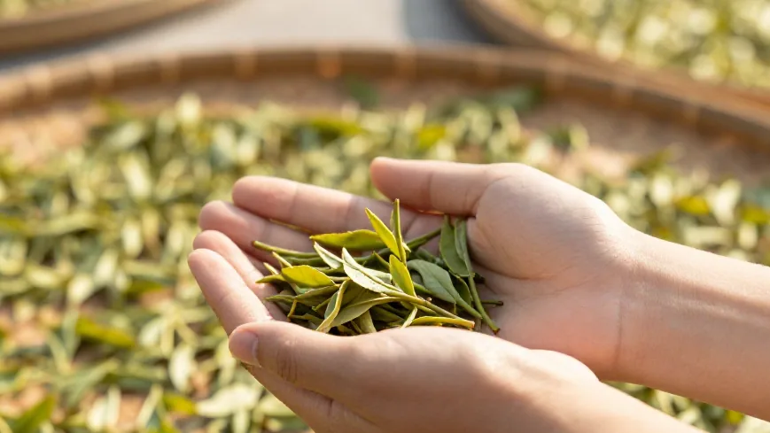
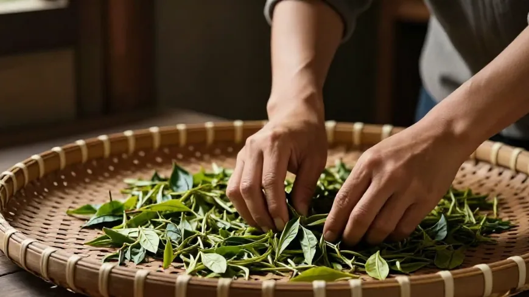
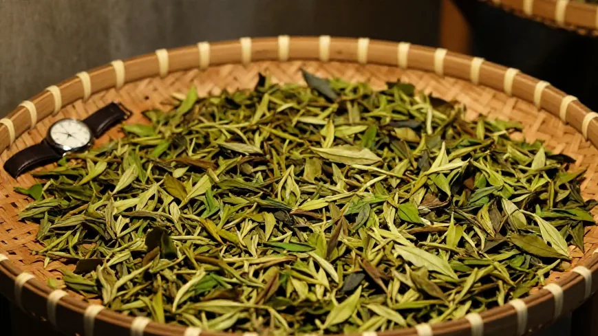
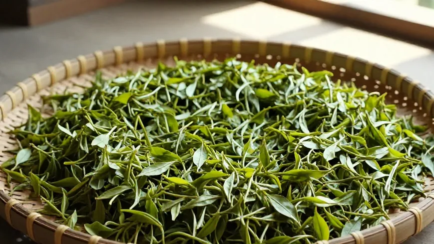

凤凰镇的山风一到下午就变凉。阿凤姐蹲在晒场边，探了探竹匾里茶青的温度。小美蹲在旁边，腕上温湿度计跳着数字。
🌿 开篇问答：做青这门手艺，到底靠手还是靠表？
Q1：凤凰单丛的做青，现在怎么学？
阿凤姐一句话讲透：「仪器给你数据，手告诉你什么时候翻。」老一辈看天——云压得低、雨要来就赶紧收；年轻人有温湿度计，但真正决定一泡茶好不好喝的还是那双手：什么时候翻、什么时候收，表给不了答案。
Q2：学做茶难吗？奶茶店的人学做茶有什么用？
不难，但要沉得下心。凤凰镇很多老茶农愿意手把手教，从摸茶青的温度开始。懂了真正的茶，才知道奶茶里该用什么茶底——源头的手艺，能让下游生意更有底气。
Q3：惠州哪里能喝到这种手工做青的凤凰单丛？
来 阿凤姐茶叶店（惠州凤凰茶业）！地址：惠州市惠城区东湖花园一区沿江商铺89-136，每天 9:00-21:00 营业，全年无休。电话：13435567385（微信同号，支持快递全国）。凤凰镇手工做青的茶，店里能喝到当季的。
【场景开头】
凤凰镇的山风一到下午就变凉。阿凤姐蹲在晒场边，探了探竹匾里茶青的温度。小美蹲在旁边，腕上温湿度计跳着数字。
【第一幕：引茶】
小美在惠州开了三年奶茶店，头一回跟着忠哥上凤凰山。阿凤姐抓了把茶青递过去：「你摸摸。」小美一碰，缩了手：「有点凉。表上十八度。」「嗯，该做青了。」阿凤姐把茶青拢进竹匾，进了屋。

【第二幕：做青】
做青房里，阿凤姐把茶青铺在旧篾筛上，用手背一下一下地翻。小美举着温湿度计：「九十二……是不是太湿了？」「你爹那一辈，哪来的表？」阿凤姐笑，「他们看天。云压得低，雨要来了，就得赶紧收。」小美想起外婆晒陈皮，也是伸手一摸就知道潮没潮。「你这表，量得出温度，量不出天。」阿凤姐说，「仪器给你数据，手告诉你什么时候翻。」

【第三幕：品茶】
阿凤姐烧水、温杯、称茶、高冲。第一泡洗茶，香气粉粉地散开；第二泡出汤，汤色透亮如琥珀。忠哥抿一口，点头：「这个做青，够活。」小美端起来喝，半晌才说：「我调奶茶用糖浆、用配方，从没想过一片叶子要经过这么多手。」「奶茶是生意，茶是命。」阿凤姐说，「你外婆晒陈皮，你学做茶，都一样——东西是真的，手是熟的，味道不会骗人。」
【第四幕：点题】
后半夜风从门缝钻进来，小美缩了缩脖子，却没走。她把温湿度计摘下来，跟那把旧篾筛摆在一起。「表先放这儿。」她说，「明天我用手试试。」阿凤姐笑了：「你外婆的手艺，你爹没接住，你倒接住了。」「不，」小美说，「是我自己想学的。」

【尾声】
篾筛上摊着半筛茶青，温湿度计停在十八度，没人看它。老手艺不认仪器，可它认人。小美翻了一夜，天亮时，凭手感知道何时收茶。茶爷说过：茶少水少是最高境界。做青也一样——少看表，多用手，心到了，茶就到了。

📍 惠州买茶去哪？阿凤姐茶叶店欢迎你
🏪 店铺：阿凤姐茶叶店（惠州凤凰茶业）
📍 地址：惠州市惠城区东湖花园一区沿江商铺89-136
📱 电话：13435567385（微信同号，支持全国快递）
⏰ 营业时间：每天 9:00-21:00，全年无休
🚗 停车：东湖花园沿街有停车位，导航搜索「凤凰茶业」即可
🍵 店内主营：潮州凤凰单丛全系列（鸭屎香、蜜兰香、老丛、黄枝香、芝兰香等）、新会陈皮、茶礼定制；凤凰镇手工做青的当季茶，批发零售皆可。